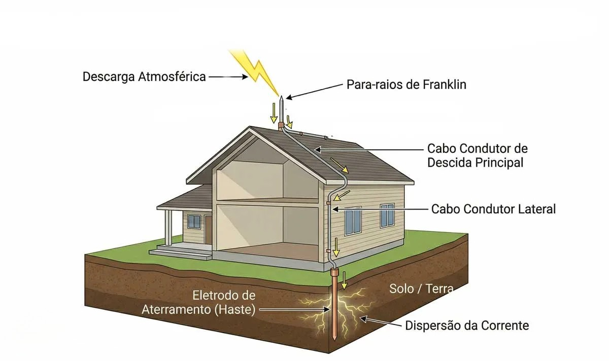
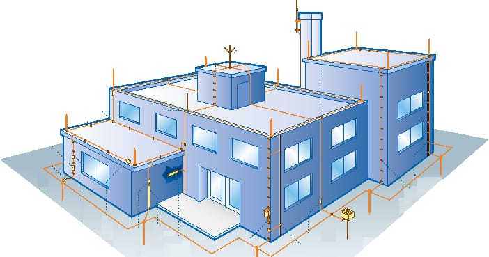
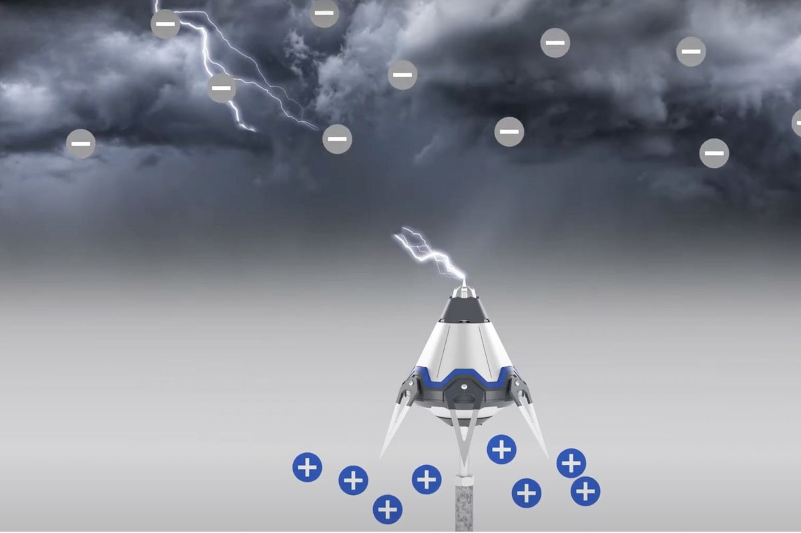

PARA-RAIOS
Entenda como funciona
Thalia e DanieleTipos de Para-Raios
Existem diferentes formas de proteger construções contra descargas elétricas.

Franklin
• O Funcionamento: Quando a tempestade fica muito forte, as nuvens (carregadas
eletricamente) começam a induzir uma carga oposta no chão e na ponta do para-raios. Pelo
princípio físico do poder das pontas, o campo elétrico fica muito concentrado na ponta da
haste de Franklin. Quando o raio decide descer naquele rumo, a haste simplesmente oferece o
caminho metálico mais fácil para ele passar.
•Área de Proteção: É limitada. Ele protege um formato de cone abaixo dele (como um chapéu de
aniversário ou um guarda-sol). Quanto mais alto o prédio, menor fica o ângulo de proteção
desse cone. Se o prédio for muito largo, uma haste de Franklin sozinha não consegue proteger
as pontas da edificação.

Melsens — Gaiola de Faraday
• O Funcionamento: O cabeçote do PDA tem um circuito eletrônico interno que fica medindo o
campo elétrico do ambiente. Quando ele percebe que um raio está prestes a cair (frações de
milissegundos antes), o aparelho libera uma carga ionizante massiva para cima. Isso cria um
"líder ascendente" (uma faísca que sobe em direção ao céu) muito antes do que uma haste
comum faria.
• Área de Proteção: Como ele "pesca" o raio muito mais alto no céu, ele promete criar um
cone de proteção gigante (um "guarda-chuva virtual") que consegue cobrir não apenas o prédio
onde ele está fixado, mas também pátios, estacionamentos e outras pequenas construções ao
redor.

Ionizante — PDI
1. A Captura: O raio é interceptado por um dos vários captores ou cabos da malha metálica
instalada no teto do edifício.
2. A Divisão da Corrente: Em vez de descer por um único fio, a corrente elétrica se divide
de forma equilibrada por todos os cabos condutores que descem pelas laterais externas do
prédio.
3. O Aterramento Seguro: A energia chega ao solo de forma distribuída pelas hastes de
aterramento interligadas ao redor da fundação, dissipando-se na terra sem causar danos.
Sem Para-Raios
Observe o que pode acontecer quando uma construção não possui proteção.
Com Para-Raios
Agora veja como a descarga pode ser conduzida com segurança até o solo.